Всего для создания интернет-страницы нам понадобится создать 3 файл
1. Папка image, в нее нам нужно поместить все фотографии, которые будут использоваться в дальнейшем на сайте
2. Файл index.html, для его создания необходимо создать нажать правой кнопкой мыши (ПКМ) в свободном месте и создать текстовый документ, после, повторно нажать ПКМ, но уже на сам файл и выбрать пункт ПЕРЕИМЕНОВАТЬ, и переименовываем в index.html (!важно, это сработает только если вы видите расширения файла, например txt, если вы не видите, то перейдите в проводнике в раздел вид и поставьте галочку на пункт ВИДЕТЬ РАСШИРЕНИЕ ФАЙЛОВ)
3. Аналогичным образом создаём файл style.css
1. Открываем файл index.html
2. Пишем в нем структуру для работы
• Тег DOCTYPE — ключевой компонент web-страниц, претендующих на соответствие стандартам: без него ваш код и CSS не пройдут проверку валидатором.
• Тег html основная часть документа. Благодаря этому тегу браузер понимает, где начинается контент, который необходимо обработать как HTML.
Тегу html обычно добавляют важный атрибут lang="ru" в котором задаётся язык документа.
• Тег head предназначен для хранения элементов, цель которых - помочь браузеру в работе с данными.
• Тег meta с атрибутом meta задают кодировку символов.
• Тег link определяет отношение между текущим html-документом и внешним ресурсом, на который он ссылается.
Тоесть на файл style.css для стилей.
• Тег body содержит все содержимое HTML документа, например заголовки, параграфы, изображения, гиперссылки, таблицы, списки и т.д.
1. Создаем тег div. Он предназначен для объединения элементов и деления веб-страницы на фрагменты (Например, перед нами стоит задача реализовать окно, где будет вся информация о товаре в магазине, нам как-то необходимо сгруппировать эту информацию и разместить в нужном месте на экране, как раз для такой группировки мы и используем тег div. Из этого тега состоит вся страница, ведь все элементы так или иначе оборачиваются в него, квадраты на рисунке - это тег div)
Теперь всю структуру нужно вписывать в тег div.
2. Для того, чтобы добавить картинку на сайт нужно добавить ее в папку img.
3. Используем тег img (знач. image - изображение), в котором указываем путь атрибутом src (source - путь), а атрибутом alt (alternative text- альтернативный текст) текст, который будет виден, если картинка не прогрузится
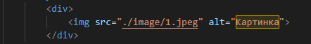Нажимаем contrl + s, чтобы сохранить изменения, переходим на страницу и обновляем ее. Как выглядит на сайте:
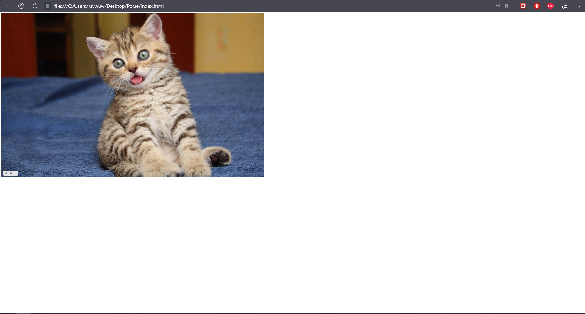4. Задаем текст картинке с помощью тега p (paragraph - абзац)
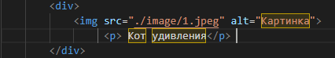Также сохраняем изменения и смортит как это выглядит на сайте:
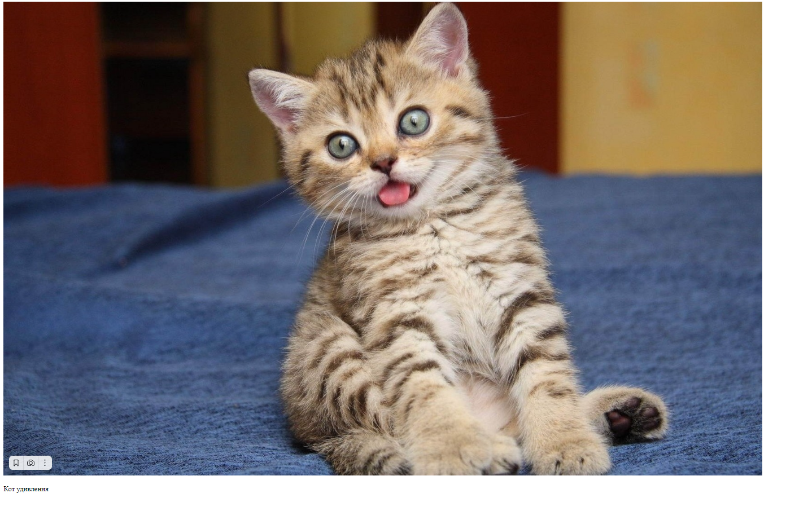5. С помощью тега h (header - заголовок) задаем заголовок. Бывают h1, h2, h3, h4, h5 и h6. Чем больше цифра, тем меньше размер текста и значимость заголовка (на сайте может быть лишь один заголовок рамзера h1)
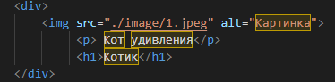Как выглядит на сайте:
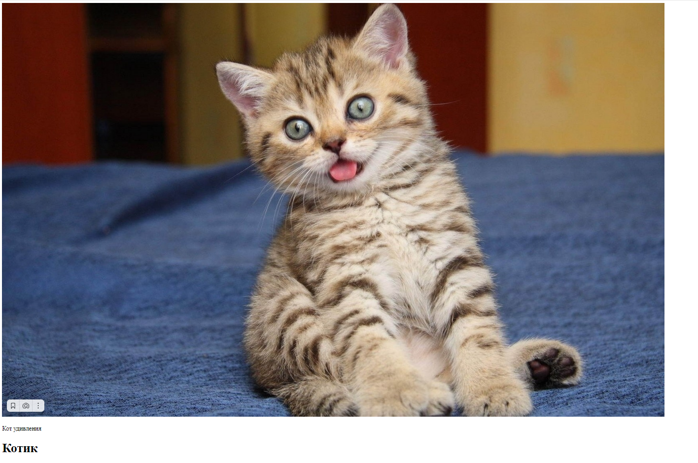6. С помощью тега button (с англ. - кнопка) создадим кнопку.
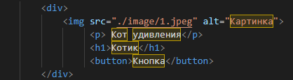Как выглядит на сайте:
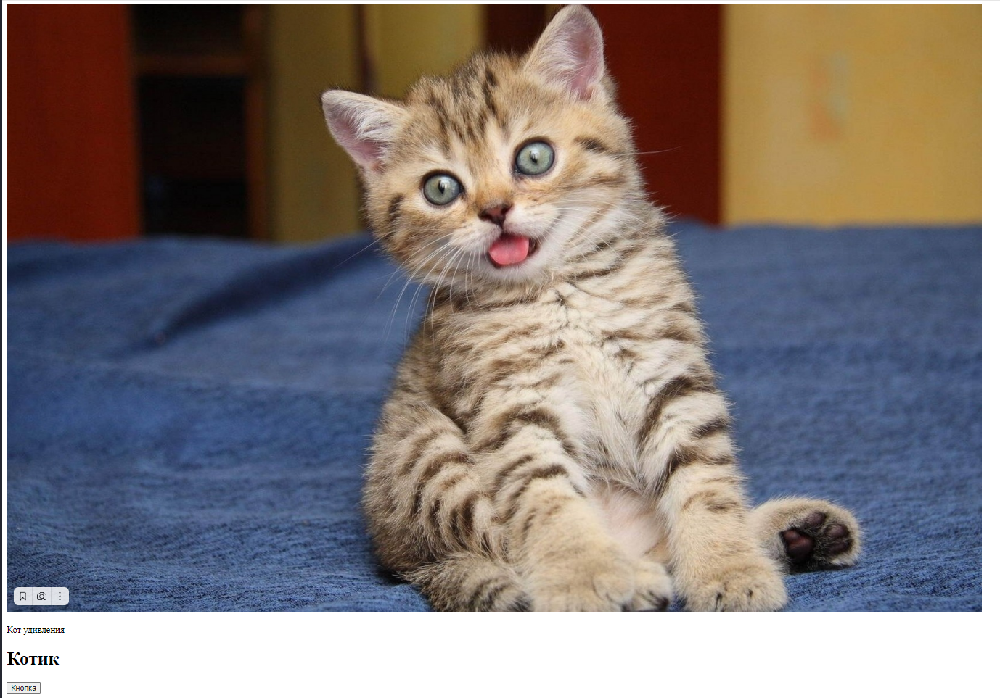7. Теперь создадим кнопку, которая будет переносить нас на другую страницу.
Для этого в папке создадим новый файл index2.html.
Теперь в первом файле index.html используем тег а с атрибутом href. Запишем его в начало тега div. Тег а определяет гиперссылку (её также называют просто "ссылка"), которая используется для перехода с одной страницы на другую. В атрибуте href пишем путь к файлу, к которому нужно будет перейти. После этого атрибута можно задать название кнопки.
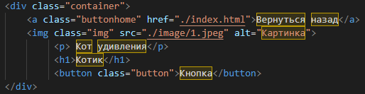Как выглядит на сайте:
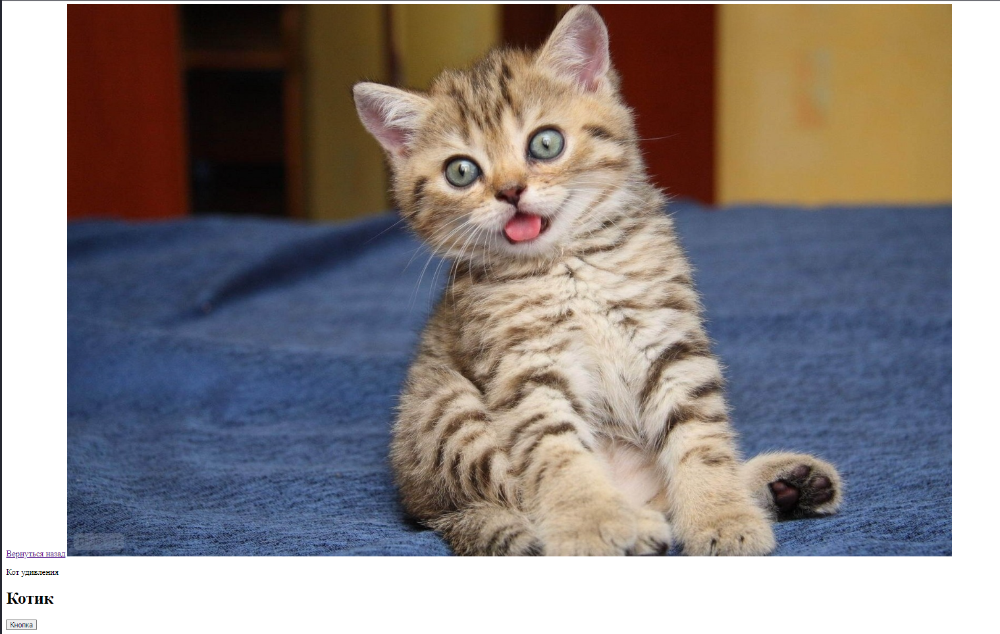Теперь задаем стиль нашей страничке. (Подключали файл css в Разделе 1)
1. С помощью атрибута class указываем название класса в теге div, с помощью которого будем обращаться в файл css. На картинке указан класс container для тега div, теперь мы можем обратиться к классу container внутри файла css
2. Открываем файл css. Через точку обращаемся к классу, который задали в div.
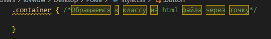
Теперь внутри такого класса мы можем управлять внешним видом элементов, созданных с помощью тегов в файле index.html (!важно стили мы задаем по принципу свойсвто : значение, всегда 1 к 1, 1 свойство к 1 значению, например, мы решим поменять размер шрифта, для этого мы используем свойство font-size и придадим ему значение 20px (pixel), выглядеть это будет так: font-size: 20px )
3. Меняем фон с помощью свойства background-color.
4. Выравниваем все содержимое по центру с помощью свойства text-align: center.
На сайте выглядит так:
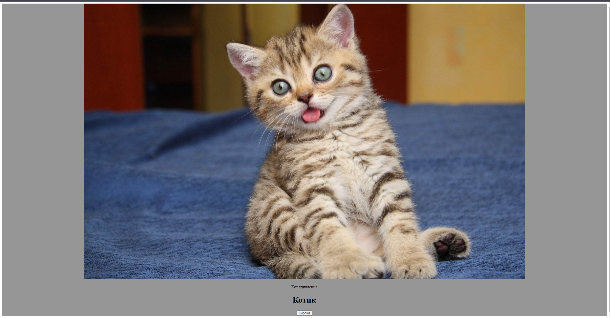5. Теперь уменьшим размер картинки. Тегу img задаем класс.
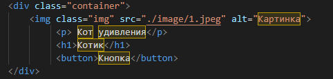Переходим в файл css и обращаемся к этому классу.
Задаем ширину с помощью свойства width.
На сайте выглядит так:
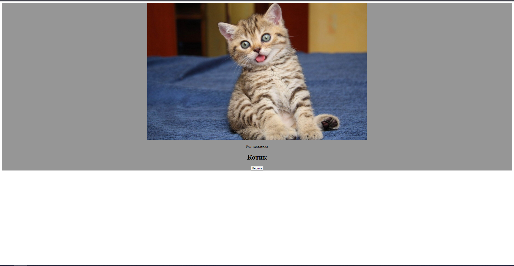6. Теперь изменяем кнопку. Убираем границы и делаем больше отступы.
Тегу button задаем класс.
7. Переходим в файл css и обращаемся к классу button.
С помощью свойства margin задаем прастранство за рамкой.
С помощью свойства padding изменяем внутренние отступы от границ элемента.
На сайте выглядит так:
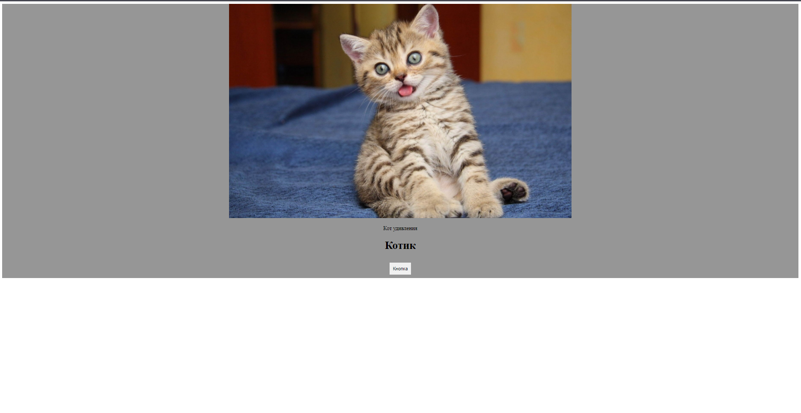8. Кнопке, которая совершает переход на другу страницу, также задаем класс.
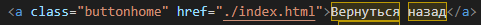
Переходим в файл css и обращаемся к классу buttonhome.
С помощью свойства text-decoration убираем нижнее подчеркивание.
С помощью свойства color задаем цвет текста.
С помощью свойства background-color устанавливаем фон кнопки.
С помощью свойства padding делаем внутренние отступы от границ элемента.
На сайте выглядит так:
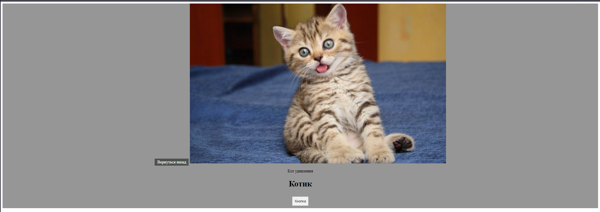DOM — это объектная модель документа, которую браузер создает в памяти компьютера на основании HTML-кода, полученного им от сервера.
Иными словами, это представление HTML-документа в виде дерева тегов.
Для описания структуры DOM потребуются термины: корневой, родительские и дочерние элементы. Корневой элемент находится в основании всей структуры и не имеет родительского элемента.
Дочерние элементы не просто находятся внутри родительских, но и наследуют различные свойства от них. На картинке ниже изображено DOM-дерево.
Чтобы увидеть DOM-дерево нашего сайта нужно нажать на кнопку f12 и перейти во вкладку elements.
Здесь вы увидите дерево элементов, из которых состоит сайт.